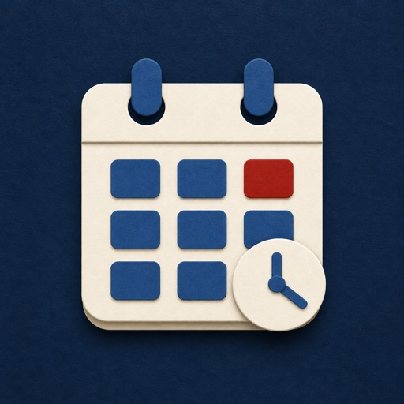
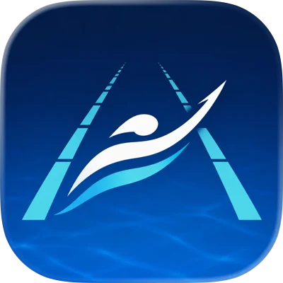
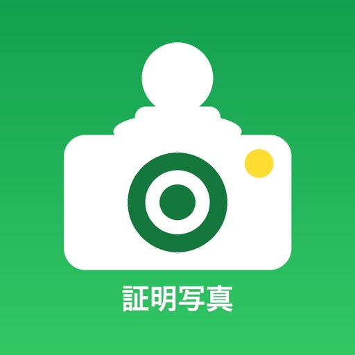
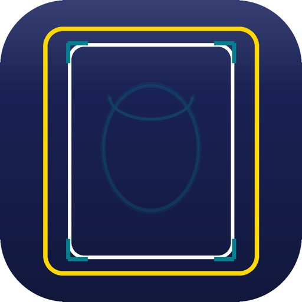

SunData App Business
日常を、少し便利にするアプリ。
SunDataサービス株式会社では、生活支援、ニュース、証明写真作成など、日々の暮らしで役立つiPhone / iPad向けアプリを企画・開発しています。
- 公開中
- 9アプリ
- 対応
- iPhone / iPad
- 領域
- 勤務管理・セルフケア・生活支援・スポーツ・ニュース・証明写真
開発中
てどり日和
給与明細をもとに手取りを記録し、年収と扶養・社会保険の見通しを確認できるアプリ。支払日別・勤務先別の実績と予定を管理できます。

仕事効率化 / 無料・アプリ内課金
シフト日和
シフト入力、勤務時間・給与・交通費の概算、月間カレンダーの共有までをひとつにまとめた勤務管理アプリ。テンプレート、バックアップ、リマインダーにも対応しています。
ライフスタイル / 無料
Koyomi｜気分と習慣の記録
毎日の気分、小さなセルフケア、夜のひとことを無理なく記録するアプリ。30日間の気分バランス、習慣、天気との組み合わせを振り返り、自分らしいリズムを見つけられます。記録は端末内に保存されます。

スポーツ / 無料・アプリ内課金
SwimScope
競泳選手・保護者・コーチのための記録検索・成長確認アプリ。選手や大会、公開済みの競技結果を検索し、自己ベストとの差や種目別の推移を確認できます。


ユーティリティ / ¥100
証明写真 - ID Photo Maker
AI背景除去、各種証明写真サイズ、補正、トリミング、高解像度書き出しに対応した証明写真作成アプリです。
App Storeで見る